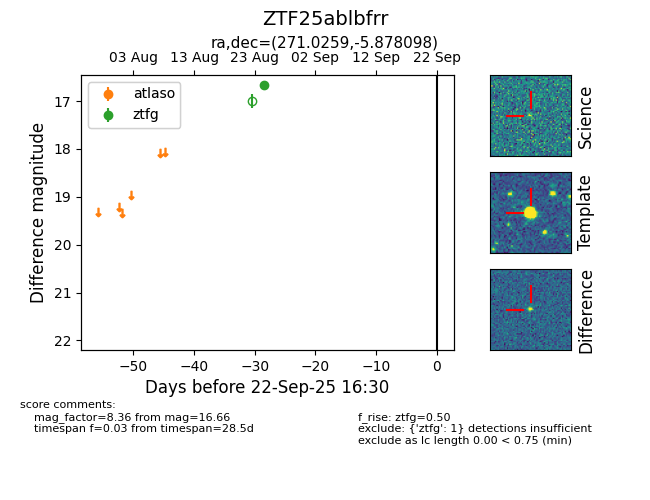

FINK: ZTF25ablbfrr
Lasair: ZTF25ablbfrr
ALeRCE: ZTF25ablbfrr
ZTF25ablbfrr (ztf,fink)
equatorial (ra, dec) = (271.0259,-5.87810)
galactic (l, b) = (22.2206,+7.75005)

last ztfg=16.66
1 ztfg detections